1. 01-calm-today
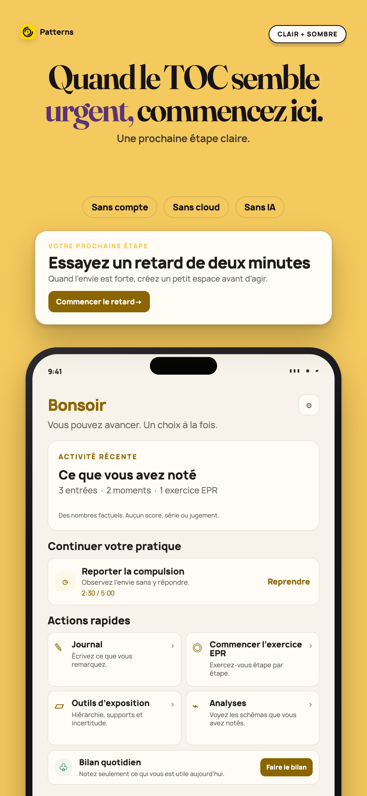
Apple 1290×2796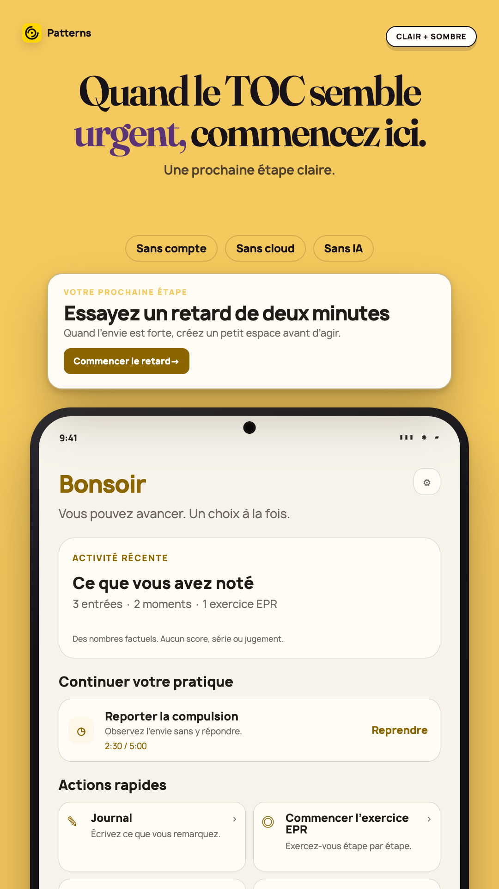
Play 1080×1920Écran Aujourd’hui de Patterns avec des nombres factuels et une action pour retarder une compulsion de deux minutes.
2. 02-delay-the-urge
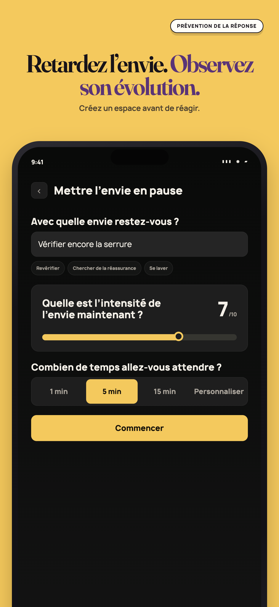
Apple 1290×2796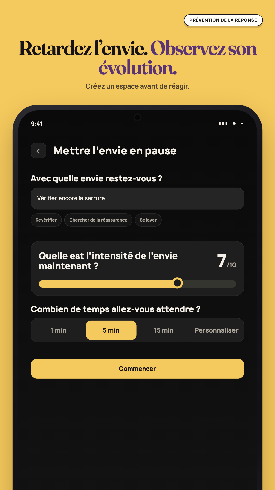
Play 1080×1920Réglage du retard d’une compulsion avec description, intensité saisie et durée d’attente.
3. 03-build-your-exposure-ladder
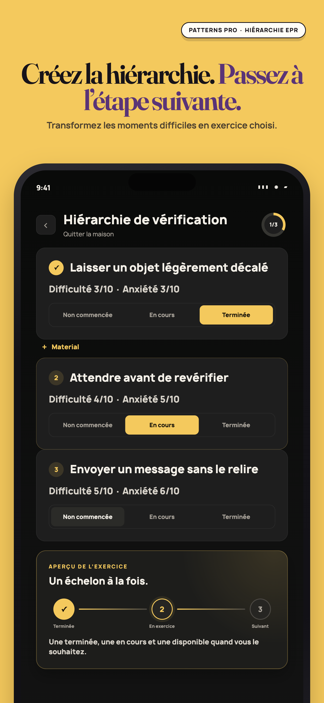
Apple 1290×2796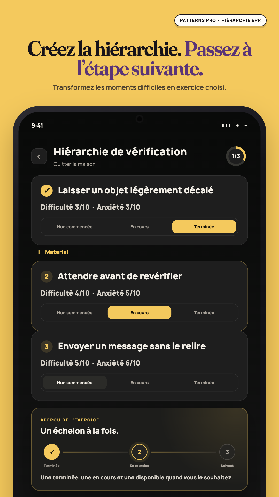
Play 1080×1920Hiérarchie d’exposition avec trois étapes personnelles et des libellés pour chaque état d’exercice.
4. 04-see-patterns-not-judgments
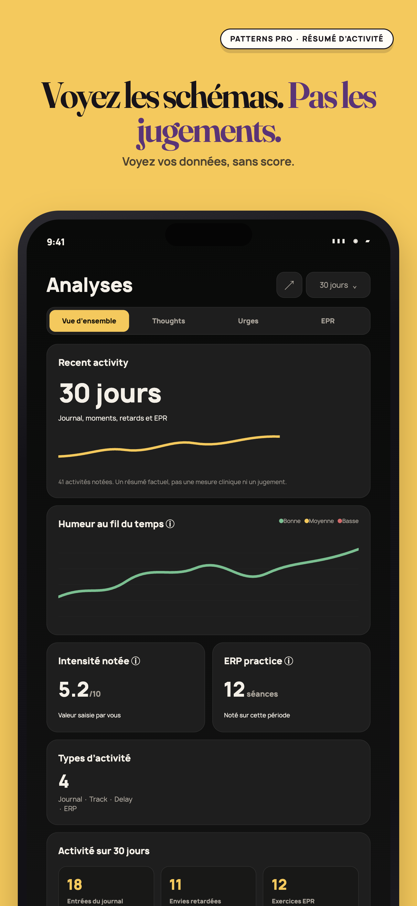
Apple 1290×2796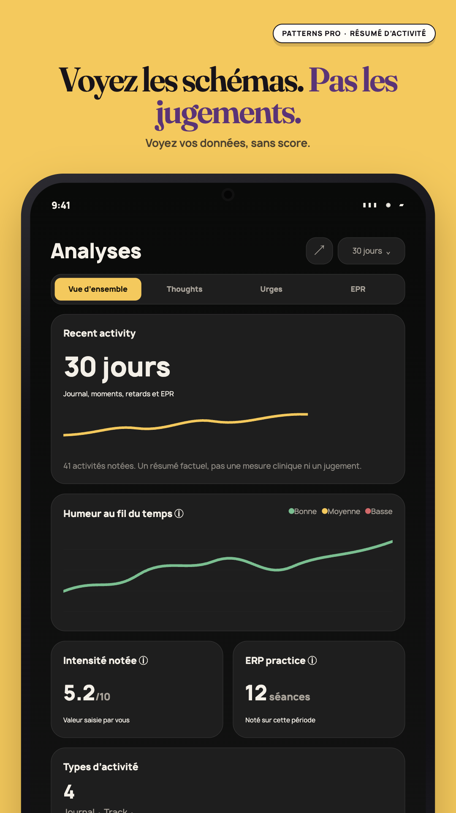
Play 1080×1920Insights apaisés avec nombres factuels du journal, des retards et de l’EPR, sans score ni série.
5. 05-no-ai-to-ask
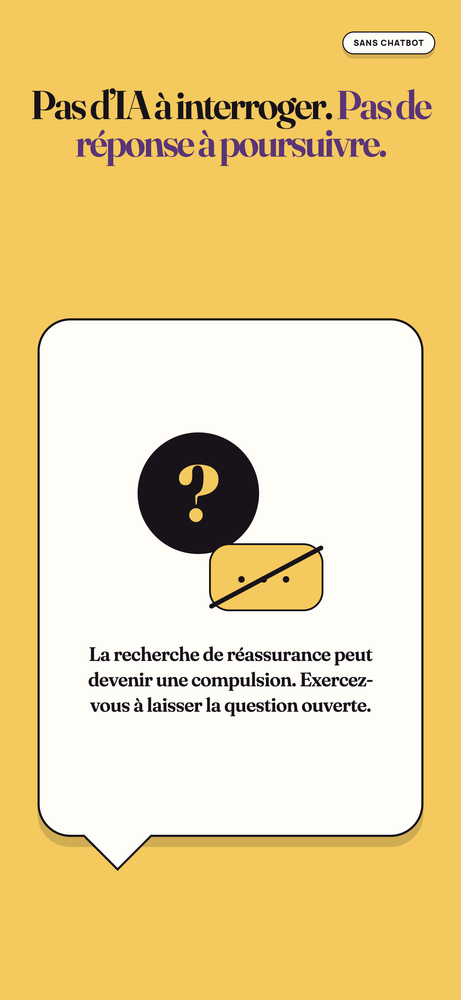
Apple 1290×2796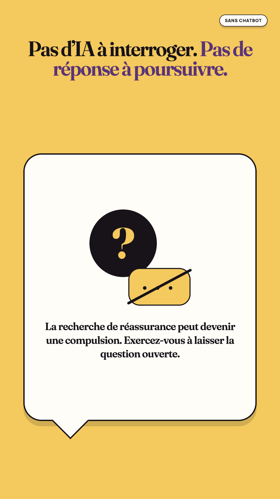
Play 1080×1920Message expliquant que Patterns ne propose pas de chatbot pour obtenir une réassurance immédiate.
6. 06-nothing-leaves-your-phone
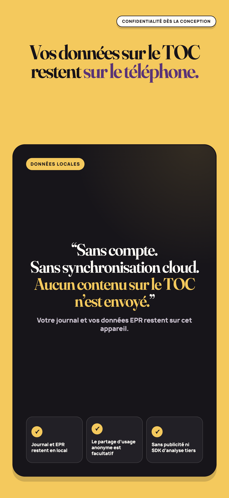
Apple 1290×2796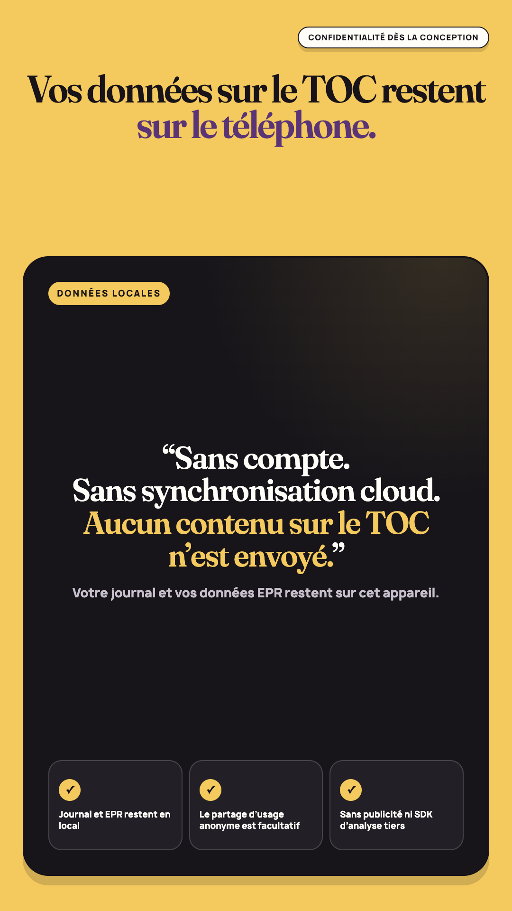
Play 1080×1920Carte indiquant que journal et EPR restent sur l’appareil sauf en cas d’exportation manuelle.
7. 07-private-journaling
Apple 1290×2796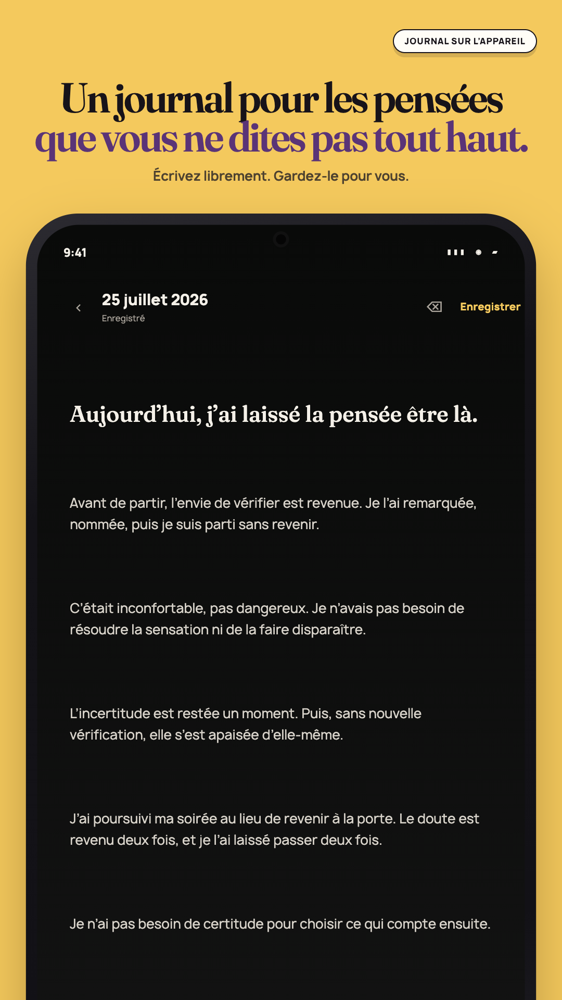
Play 1080×1920 Éditeur de journal privé sur l’appareil avec état enregistré et commandes de mise en forme.
8. 08-patterns-pro
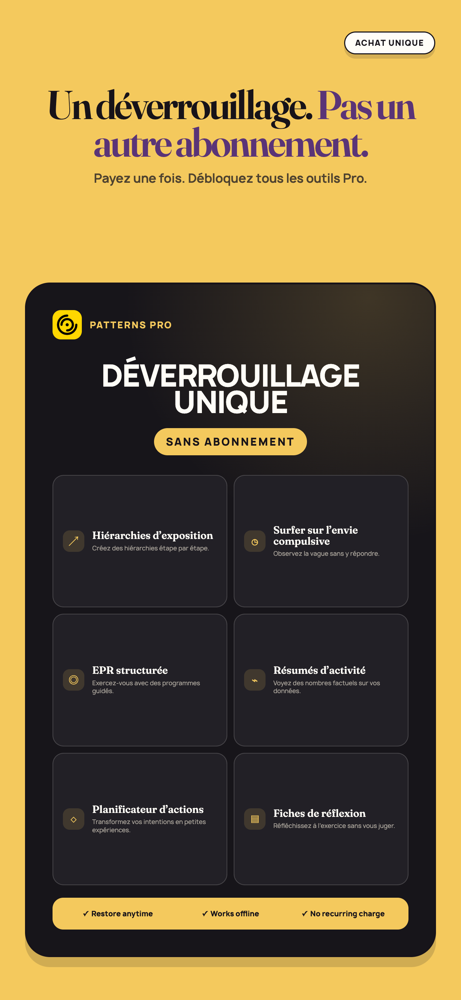
Apple 1290×2796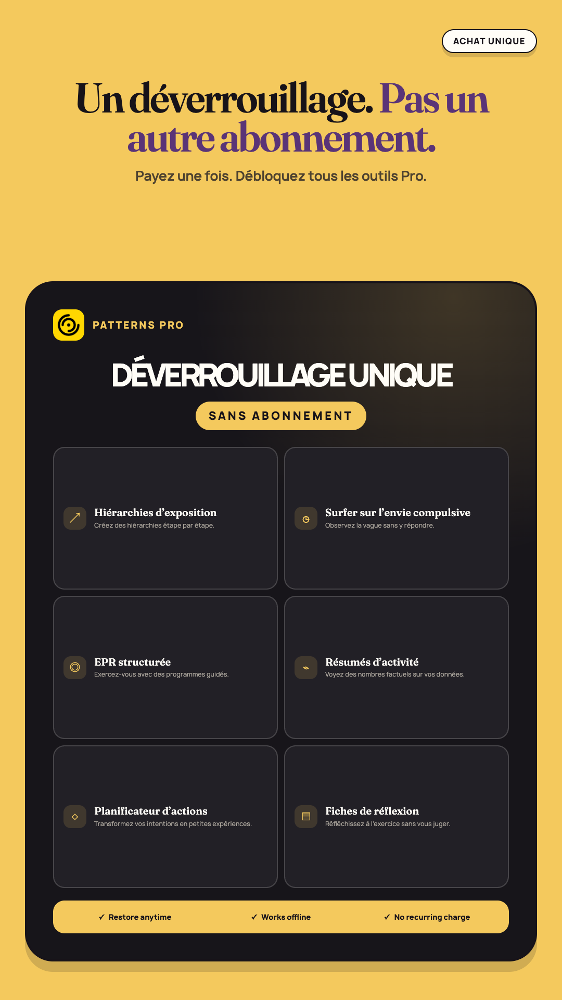
Play 1080×1920Achat unique Patterns Pro avec la liste des outils d’auto-assistance et de réflexion inclus.
Google Play feature graphic
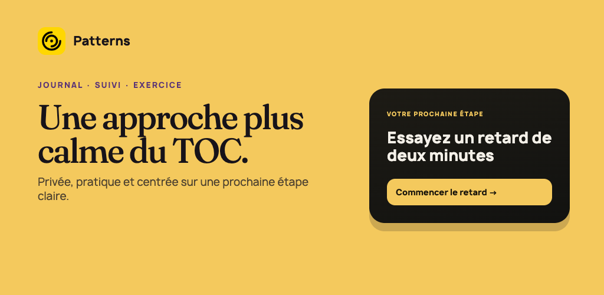
Play 1024×500Une approche plus calme du TOC. Privée, pratique et centrée sur une prochaine étape claire.